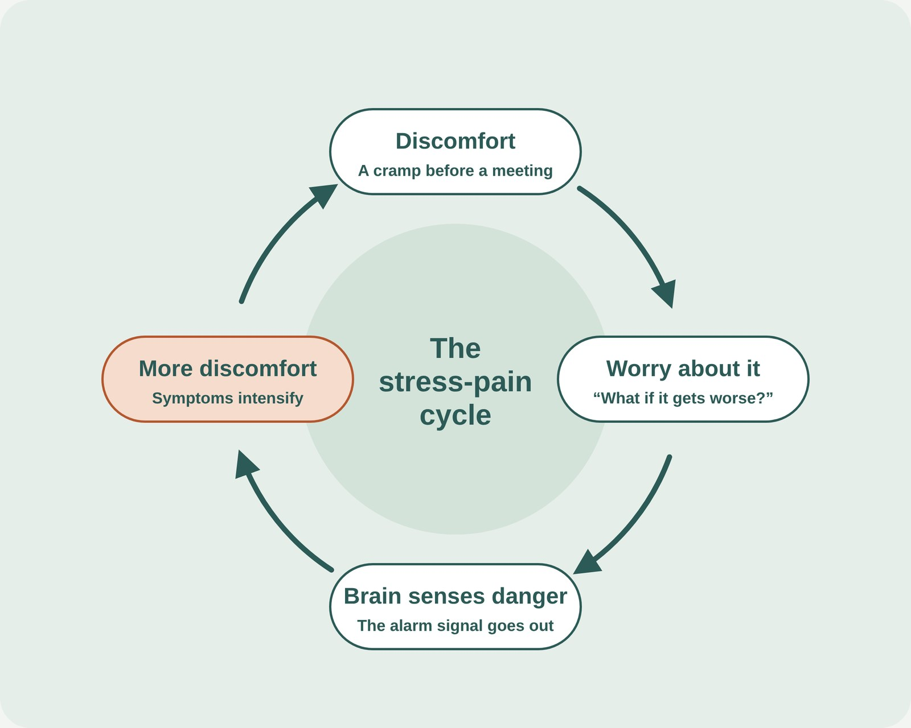

The big presentation is Thursday. By Tuesday, your stomach already hurts. It feels heavy, and your gut acts up more than it should. You map out where the bathrooms are, cut out certain foods "just in case," and wonder why your body picks the worst possible moments to act up.
Maybe you've been told, "It's probably just stress." And maybe that left you feeling dismissed, as if your symptoms weren't real.
Here's the short answer: yes, stress can trigger and worsen IBS symptoms. And no, that doesn't mean it's all in your head. Your gut and brain are deeply connected, and understanding that connection is often the first step toward feeling better.
How stress shows up in your gut
Your digestive system has its own network of nerves, sometimes called the "second brain." It's in constant two-way communication with the brain in your head. Researchers call this the gut-brain axis, and IBS is now classified as a disorder of gut-brain interaction.
What does that mean, you might wonder?
Your gut has its own nervous system that can move food along without any help from your brain. But when your brain senses pressure, like a looming deadline, a difficult conversation, or a packed calendar, your nervous system shifts into protective mode and interferes with the gut's own system. That shift can:
- Speed up or slow down digestion, leading to diarrhea, constipation, or both
- Make the gut more sensitive, so you feel cramping or pain more easily and have a lower pain tolerance in general
- Tighten the muscles in your abdomen and digestive tract, which can slow digestion and contribute to reflux
- Disrupt sleep, which makes the gut even more reactive the next day
In a short emergency, this response is useful. But when you're under pressure for weeks or months, the alarm can get stuck on. Your gut keeps reacting as if something is wrong, even while you're sitting at your desk.
No, it's not "all in your head"
Your symptoms are physical and real. Stress changes how your nerves, muscles, and digestion actually behave. Stress isn't the only cause, but it's a powerful trigger and amplifier.
There's often a second piece most people overlook. I call it "the stress-pain cycle."

You notice a cramp before a meeting. You start worrying it will get worse. That worry sends another alarm signal to your brain, and the symptoms intensify. Over time, this loop gets stronger, and your body learns to brace before every big moment.
This is especially common in driven people and perfectionists, the ones who want everything to be perfect and rarely slow down. You may look like you have it all together while your gut quietly pays the price.
What actually helps
Because IBS involves both the gut and the brain, care that addresses both tends to work best. The American College of Gastroenterology's IBS guideline suggests gut-directed psychotherapies, such as cognitive behavioral therapy and gut-directed hypnosis, as part of a comprehensive treatment plan, not as a last resort.
In therapy, that work often looks like:
- Understanding your pattern. Mapping when symptoms flare makes them feel less random and less frightening.
- Calming the alarm. Learning quick ways to settle your nervous system, including in the middle of a workday.
- Loosening the worry loop. Making room for discomfort instead of bracing against it, which often lowers how intense symptoms feel.
- Addressing what's underneath. Perfectionism, always being the one everyone turns to, or past experiences can keep your body on high alert.
A few things you can try this week
- Take three slow breaths with a longer exhale before meetings or meals. It signals safety to your nervous system.
- Notice your pattern. Jot down when symptoms show up and what was happening that day.
- Build in a wind-down after big pushes instead of going straight to the next task.
- Eat sitting down, away from your screen, when you can.
Check with your doctor first. IBS symptoms can overlap with other conditions, so see your doctor if your symptoms haven't been evaluated. Get medical care promptly for blood in your stool, unexplained weight loss, trouble swallowing, persistent vomiting, symptoms that wake you at night, fever, or new symptoms after age 50. Therapy works best alongside your medical care, not instead of it.
You don't have to keep bracing
I've lived with stress-related IBS and acid reflux myself. Understanding the gut-brain connection, and working with it in therapy, was my turning point.
If your stomach always seems to know you're stressed before you do, I'd love to help. I offer counseling in English and Mandarin, in person in Nashville and by telehealth for clients in Tennessee. You can also read more about the gut-brain connection.
This article is for general education and isn't a substitute for medical or mental health care.